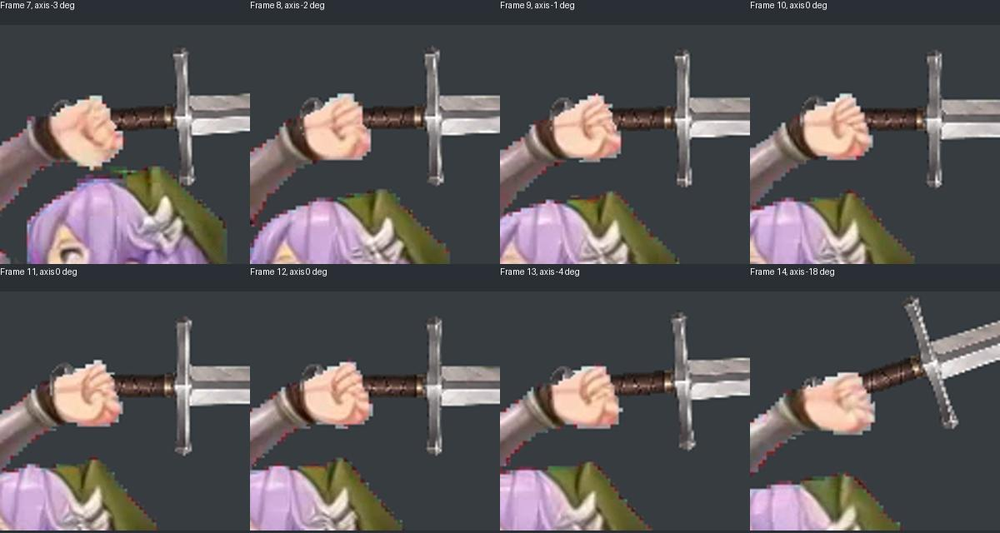
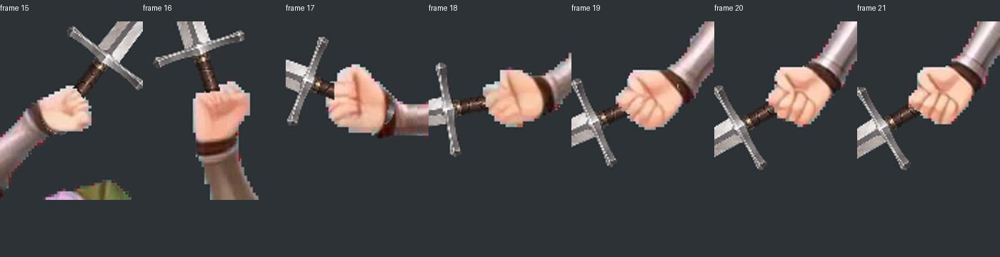

实际素材 · Fantasy Warrior Attack3
原包 8 个关键帧 · 参考镜像朝左
参考中的原有特效保留用于辨认动作，西雅全帧无剑光。两者按准备、蓄力、挥出、收势阶段对齐；这不是参考作者的原始游戏时序。
高位握持与挥出段放大检查
高位尾柄沿护腕的明显重叠已经修正；这里只遮挡原始手指范围，未扩大遮挡隐藏问题。


独立剑素材、身体原视频与可下载数据
身体由 Seastar 生成新连续动作，剑使用单张透明素材按逐帧挂点旋转和平移。关闭“显示剑”可检查身体本身。
独立直剑 · 身体图集 · 身体帧序 · 握点、角度和遮挡数据 · 合成图集 · 合成帧序 · 本地校验记录